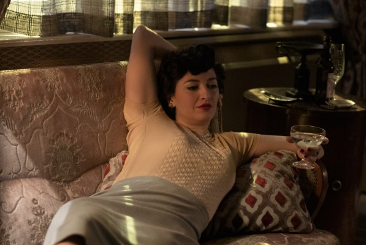

Fotogramas
Galería cinematográfica
Pasá las diapositivas con las flechas, los puntos o el teclado (← →) cuando el carrusel esté enfocado. Pausa automática al pasar el mouse.

Libro de Alice
La madre biológica de Beth era doctora en matemáticas.

Alma y Beth
Además de madre adoptiva, Alma es su mayor confidente.

Beth y Shaibel
Beth aprendió ajedrez en el sótano del hogar.

Beth y Beltik
Primer gran oponente; después, vínculo muy cercano.

Beth y Townes
Sesión de fotos para la revista de Townes.

Alma
La infaltable copa de martini en sus manos.

US Open 1966
Primer gran duelo frente a Benny Watts.

US Open 1967
Segundo año consecutivo cruzándose en la final.

La carta de Beth
Convenció a Shaibel de ayudarla con su primer torneo.
.jpg)
Beth y Jolene pequeñas
Se conocieron en el hogar y fueron inseparables.

Beth y Luchenko
Partido clave hacia la final del mundial.

Beth y Watts · Exhibición
Se enfrentaron muchas veces; siempre aprendieron mutuamente.

Beth y Jolene adultas
La distancia no apagó su lealtad.

Beth y Borgov
El saludo tras la victoria de Beth.

Apertura contra Borgov
Beth destaca jugando con negras.

El altar de Shaibel
Un rincón con el recorrido de Beth hasta el final.

El jugador misterioso
Un guiño visual al conserje del hogar.